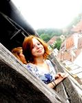

Coordonator naţional
Monica Mocanu
M-am intersectat cu ARDOR acum 19 ani, după un telefon al unei prietene care mă întreba dacă nu vreau să intru într-un program educațional spectaculos. Am intrat dupa șase luni, timp în care m-am gândit dacă debate-ul nu este cumva un instrument cam tăios pentru mine; între timp am aflat că așa e, dar că pot supraviețui acestui aspect. Closer to Oxford vine in intampinarea dorintei mele ca achizițiile din debate sa ajunga mai prompt in spatiul public. Mai nou, îmi place sa încerc şi alte metode de învatare cu elevii mei, "mai vechi" îmi plac Salman Rushdie şi Jose Saramago.
Coordonator Bucureşti
Bianca Dragomir (trainer, content manager)
Fac debate de nouă ani şi încă am fluturi în stomac înainte de o rundă şi mă binedispune pentru o săptămână când un debater “le zice bine”. În acești ani m-am bucurat de combinația reușită dintre campionatele de debate și întâlnirea cu oameni interesanți şi oraşe frumoase. Dincolo de dimensiunea competiţională, cred că dezbaterile energizează și deschid gândirea mai mult decât orice şi ar trebui să reprezinte un exerciţiu constant de întreţinere a minţii. De aceea ţin mult la Closer to Oxford şi la comunitatea pe care a creat-o. Am o slăbiciune pentru persoanele cu umor şi pentru oamenii cu entuziasm molipsitor.
Coordonator Bălți - Republica Moldova
Ana Zatușevschi
Sunt studentă la Universitatea de Stat “Alecu Russo” din Bălți, mă implic activ în acțiuni de voluntariat și-mi plac proiectele care mă fac să excelez. Ca orice om axat pe succes, îmi plac “luptele” incitante ce se soldează cu victorii, iar dezbaterile permit identificarea învingătorilor reali. Am participat cu colegul meu Dumitru la campionatul național de debate online Closer2Oxford Moldova. Datorită acestei experiențe, am înteles cît de mult contează să fii bine "echipat" cu argumente ca să cîștigi, dar în special, cât de important e sa fii in compania unui coechipier puternic.
Coordonator Chișinău
Patricia Zghibarta
 Am descoperit pasiunea pentru dezbateri în clasa a 7-a, când am participat pentru prima dată la un campionat intern și... am pierdut. Am decis să îmi iau revanșa la următorul campionat și am rămas atașată de tot ce înseamnă argumentare și confruntare de idei. Ador sa urmaresc "meciurile de debate" care se dau între oamenii care merg pe strada, în transport public sau în pauzele de la universitate sau job. Or, ele sunt cele în care ei trăiesc dezbaterile, nu doar le exerseaza. Mai nou, sunt foarte fericită să fac parte din familia "Closer to Oxford".
Am descoperit pasiunea pentru dezbateri în clasa a 7-a, când am participat pentru prima dată la un campionat intern și... am pierdut. Am decis să îmi iau revanșa la următorul campionat și am rămas atașată de tot ce înseamnă argumentare și confruntare de idei. Ador sa urmaresc "meciurile de debate" care se dau între oamenii care merg pe strada, în transport public sau în pauzele de la universitate sau job. Or, ele sunt cele în care ei trăiesc dezbaterile, nu doar le exerseaza. Mai nou, sunt foarte fericită să fac parte din familia "Closer to Oxford".
Coordonator Cluj
Bianca Prunea
 Sunt studentă în anul III la Facultatea de Drept (UBB-Cluj) şi fac dezbateri de mai bine de şase ani. în tot acest timp, dezbaterile au ajuns să joace un rol important în viaţa mea şi am încercat să învăţ ceva din fiecare experienţă. Mă bucur să pot spune că prin intermediul evenimentelor de debate am călătorit mult şi am cunoscut oameni inteligenţi şi interesanţi, unii dintre ei numărându-se azi printre cei mai buni prieteni. Sunt mândră că am reuşit să ajung în finala Campionatului de Debate de la Cambridge 2011 şi în semifinală Campionatului de la Oxford în 2012. Mi-am dat însă seama că dezbaterile nu se limitează doar la componenta competiţională, ci au potenţialul de a pune în mişcare ideile şi a "antrena" minţile tinerilor din medii diferite. Aş vrea să contribui şi eu la această comunitate şi de aceea mă bucur să arbitrez la Closer to Oxford.
Coordonator Iași
Liviu Gajora
 Dependent de comunicare, dezbateri și dialog în spațiul public, nu puteam rata șansa de a mă alătura proiectului C2O. Activez în cadrul programului de dezbateri de mai bine de zece ani și îmi place să cred că am păstrat aceeași curiozitate de a descoperi, analiza și evalua argumente pro și contra unei moțiuni ca la început. În prezent sunt doctorand în Științele Comunicării în cadrul Universității Al. I. Cuza Iași.
Dependent de comunicare, dezbateri și dialog în spațiul public, nu puteam rata șansa de a mă alătura proiectului C2O. Activez în cadrul programului de dezbateri de mai bine de zece ani și îmi place să cred că am păstrat aceeași curiozitate de a descoperi, analiza și evalua argumente pro și contra unei moțiuni ca la început. În prezent sunt doctorand în Științele Comunicării în cadrul Universității Al. I. Cuza Iași.
Coordonator Sibiu
George Manea
Absolvent al Facultăţii de Ştiinţe Politice în cadrul Universităţii din Bucureşti, masterand în securitate, pace şi conflicte la Universitatea Liberă din Bruxelles, am considerat mereu că activităţile extra-curiculare dau valoarea dezvoltării personale şi aduc o un plus semnificativ programei şcolare din universităţi.
Născut la Constanţa, crescut la Sibiu, cu facultatea la Bucureşti, plecat cu mobilitate Erasmus la Roma şi master făcut la Bruxelles, mereu sunt întrebat unde locuiesc sau unde este casa mea. Răspunsul nu întârzie să apară şi s-ar putea numi acum „Closer to Oxford”:). Dincolo de pasiunea pentru călătorii (30 de ţări vizitate pana acum), sport (karate) şi timpul alocat pentru Model NATO Youth Summit (MoNYS) în calitate de fondator şi actual director, Closer2Oxford este un proiect complex în care argumentul primează, iar prietenia secondează. Astfel, am decis să mă alătur unei echipe creative, entuziaste şi nu în ultimul rând mereu surprinzătoare prin coeziune şi forţă persuasivă.
Coordonator Timișoara
Teodora Blidaru
Păşesc cu entuziasm în cel de-al doilea an al implicării active în cadrul Closer2Oxford pe meleaguri timişorene, după un an universitar 2011/2012 plin. Şi vă invit să ne fiţi alături! Intrinsec, am ajuns ceva "mai aproape de Oxford" în ultimul an, ca urmare a lecţiilor învăţate, a dezbaterilor pricinuite (şi) de acest proiect, dar mai ales mulţumită oamenilor, fie ei studenţi, cadre universitare, voluntari, sau susţinători pur-şi-simplu. Atunci când nu activez în cadrul Closer2Oxford, analizez teoria şi practica politicilor de sustenabilitate în cadrul companiilor cotate la burse internaţionale, promovez educaţia prin dezbateri sau călătoresc pe distanţe lungi.
Staff: training, PR, web
Raluca Bogdan (training și PR)
Am studiat Științe Politice la Universitatea București și am urmat masterul de Discurs și Argumentare de la Facultatea de Limbi Străine, sunt trainer acreditat și susțin cursuri în domeniu pentru că mă preocupă întărirea abilităților de gândire critică și argumentare în spațiul public. Sunt co-autor al cursului de lectură critică din cadrul programului Closer to Oxford, seminarul susținut fiind unic în România. Mă pasionează interacțiunea prin dialog/joc și studiul acestuia precum și promovarea culturii, educației și artelor.
Teodora Oprea (training)
Sunt studentă în anul III la drept și practic dezbaterile destul de pasionat de 8 ani. Îmi plac discuţiile profunde, substanţiale și super-analitice, dar și încercările îndrăzneţe, neconvenţionale de răsturnare a unei discuţii, de aceea încerc să-i învăţ și pe alţii să gândească logic, critic și deschis.
Îmi plac cărțile bune, neştiute de nimeni, învaţ japoneză și chineză, joc baschet și mâzgălesc versuri când mă întorc seara acasă cu autobuzul. Mă bucur de un cer senin şi mă gândesc la viitor cu entuziasm.
Bogdan Drăghicescu (Web)
Sunt o persoană ambițioasă, care nu se mulțumește cu nimic mai prejos decât cel mai bun lucru posibil, curajos (uneori poate chiar prea... ), pasionat atât de calculatoare, cât și de plimbări prin parc, de rezolvat probleme ce includ litere ciudate, precum NP, A* sau O(n), dar îmi place și să analizez un argument bun, să privesc cu un ochi critic nu numai un text academic, dar și un discurs public.